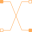
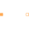
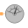

PositiveMagneticPortPositive quasi-static magnetic port |
Information
This information is part of the Modelica Standard Library maintained by the Modelica Association.
The positive magnetic port is based on the MagneticPort. Additionally the reference angle is specified in the connector. The time derivative of the reference angle is the actual angular frequency of the quasi-static magnetic potential and flux. The symbol is also designed such way to look different than the NegativeMagneticPort.
See also
MagneticPort, NegativeMagneticPort, Magnetic.FluxTubes.Interfaces.PositiveMagneticPort
Components (3)
| V_m |
Type: ComplexMagneticPotential Description: Complex magnetic potential at the port |
|
|---|---|---|
| Phi |
Type: ComplexMagneticFlux Description: Complex magnetic flux flowing into the port |
|
| reference |
Type: Reference Description: Reference |
Used in Components (6)
|
Modelica.Magnetic.QuasiStatic.FluxTubes.Basic
Zero magnetic potential |
|
|
Modelica.Magnetic.QuasiStatic.FluxTubes.Basic
Electro-magnetic energy conversion |
|
|  |
Modelica.Magnetic.QuasiStatic.FluxTubes.Basic
Crossing of two branches |
|  |
Modelica.Magnetic.QuasiStatic.FluxTubes.Interfaces
Partial component with two magnetic ports p and n for textual programming |
|  |
Modelica.Magnetic.QuasiStatic.FluxTubes.Interfaces
Partial potential sensor |
|  |
Modelica.Magnetic.QuasiStatic.FluxTubes.Interfaces
Partial magnetic voltage or flux source |